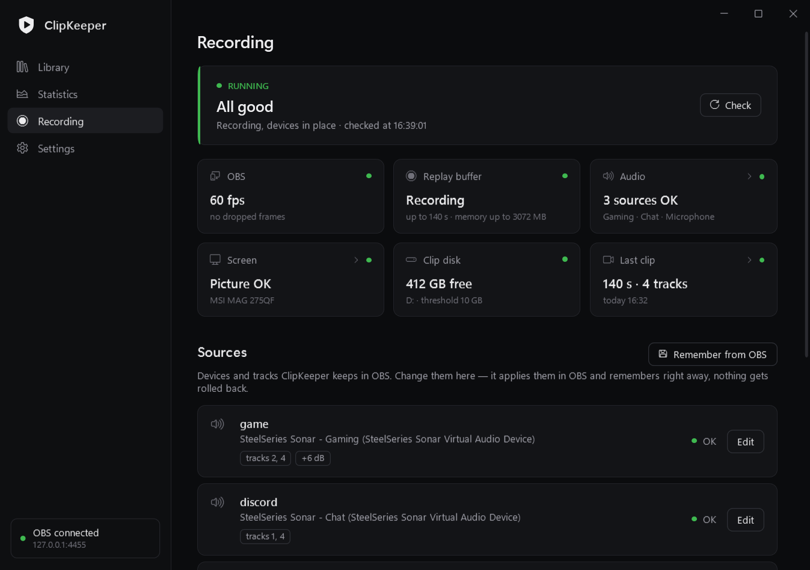

Recording guardНаблюдение за записью
Talks to OBS through obs-websocket, from the outside — no plugin, no script. Общается с OBS через obs-websocket, снаружи — без плагинов и скриптов.
- Keeps sources on the right audio devices and monitorsДержит источники на нужных звуковых устройствах и мониторах
- Restarts a crashed replay buffer — and OBS itself after a crashПерезапускает упавший буфер повтора — и сам OBS после падения
- Notices silent audio and a black or frozen pictureЗамечает пропавший звук и чёрную или застывшую картинку
- Checks every saved clip: length, tracks, dropped framesПроверяет каждый клип: длина, дорожки, потерянные кадры
- Low disk space, GPU driver failures, a daily OBS settings backupМало места на диске, сбои драйвера, ежедневная копия настроек OBS
